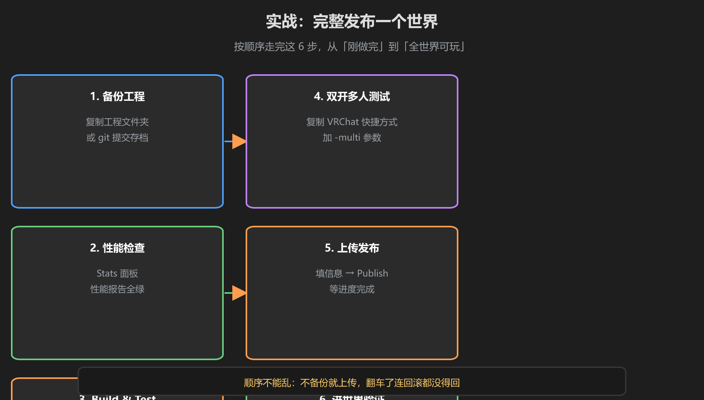
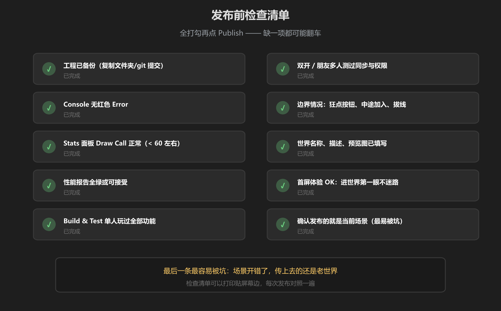

第 5 篇：实战 — 完整发布一个世界
把前四篇串成一条流水线。下面六步按顺序走，每一步做完再进下一步 —— 顺序不能乱：不备份就上传，翻车了连回滚都没得回。
实战六步

图：备份 → 性能检查 → 单人测试 → 多人测试 → 上传发布 → 进世界验证
步骤 1：备份工程
复制整个工程文件夹，或 git add . && git commit 打一个「发布前」的提交点。这是你唯一的回滚手段（第 4 篇讲过：VRChat 更新是覆盖式的）。
步骤 2：性能检查
打开 Stats 面板看 Draw Call 与 Tris，跑一遍 Build & Test 看性能报告。全绿或可接受才继续 —— 有红项先按《渲染入门》第 4 篇修，不要带着问题发布。
步骤 3：Build & Test 单人测试
用 VRChat SDK 面板构建本地测试，以真实客户端身份把每一个功能点过一遍：按钮、传送、UI、音效、胜负判定。看 Console 有没有 Error 和关键 Warning。
步骤 4：双开 / 朋友多人测试
用带 -multi 参数的快捷方式双开，重点测：状态同步、权限、抢按钮、拔线、新玩家中途加入（第 1 篇的三个边界场景）。
步骤 5：上传发布
确认当前场景正确 → 填名称/描述/预览图 → 点 Publish → 等待进度完成。上传失败就修到成功，别放过。
步骤 6：进世界验证
在 VRChat 里搜索世界名称进入，确认：能搜到、缩略图正确、玩法与本地一致。发现不对立刻修、立刻重传。
第一次完整走流程会手忙脚乱，正常。走完一次，下次就是肌肉记忆 —— 以后每次改版都循环「步骤 3 → 5 → 6」即可。
发布前检查清单

图：十项全打勾再点 Publish
- 工程已备份（文件夹复制或 git 提交）
- Console 无红色 Error
- Stats 面板 Draw Call 正常（60 以下）
- 性能报告全绿或可接受
- Build & Test 单人玩过全部功能
- 双开 / 朋友多人测过同步与权限
- 边界情况测过：狂点按钮、中途加入、拔线
- 世界名称、描述、预览图已填写
- 首屏体验 OK：进世界第一眼不迷路
- 确认发布的就是当前场景
最容易被坑的一条：「确认发布的是当前场景」。场景开错了，你上传一整天，玩家玩到的还是旧世界 —— 发布前最后扫一眼场景名。
学前检查清单
- 按六步顺序完整发布过一个世界
- 十项检查清单全部走完才点 Publish
- 发布后重新进世界验证过新内容